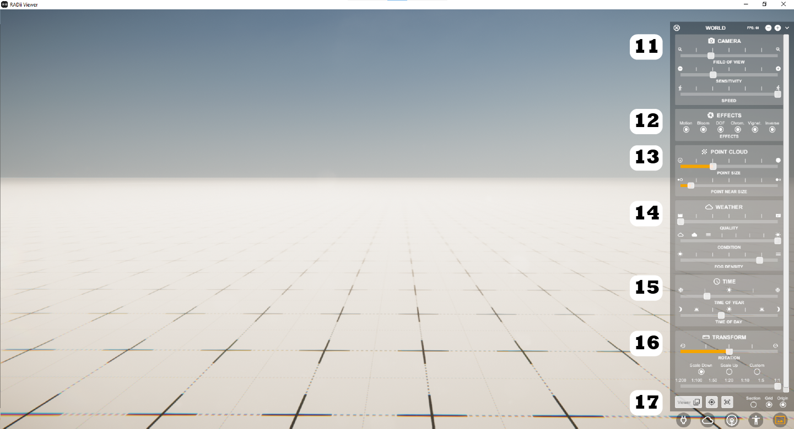

World¶
Camera
Field of view - controls the field of view at the cost of some distortion
Sensitivity - mouse sensitivity
Speed - movement speed
Note: turn slow when someone is following you through the project
Effects - turning them off increases performance
Motion = motion blur
Bloom = makes bright spots bleed at the edges, simulating a real camera
DOF = depth of field - distance between closest and furthest part of an image that are in focus
Chrom = chromatic effect - adds artifacts to the image, simulating a poor len
Vignet = darkening on the edges of images, simulating real cameras
Inverse = clipping/sectioning leaves a ghost of the hidden geometry
Point Cloud
Point Size
Point near size = increases point sizes near you
Note: pointclouds are disabled in IOS/Android viewers because they require a lot of computing power
Weather
Quality = resolution of the sky, above lv3 not significantly better
Condition = types of weather: rainy, foggy and sunny
Fog density = can hide the horizon but also your model
Note: for better performance: turn weather to sunny, fog off, quality to lowest
Time
Transform
Rotation = rotates all models around the 0 point
Scale
- Select Viewer
Standard
Stereo Shutter = for active 3D glasses
Chroma Key = a virtual green screen
Pepper Ghost = displays the model in a virtual box
Augmented Reality (AR) = displays virtual model in a real environment - available on IOs, Android, Oculus
- Tracker Method = setting for AR devices
- Projection = screen size settings
you can also edit the overall scale, height of horizon
Grid = toggles the default floor
Origin = toggles the origin point